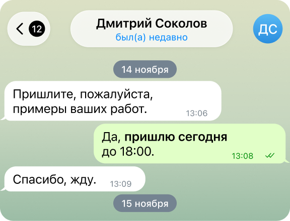
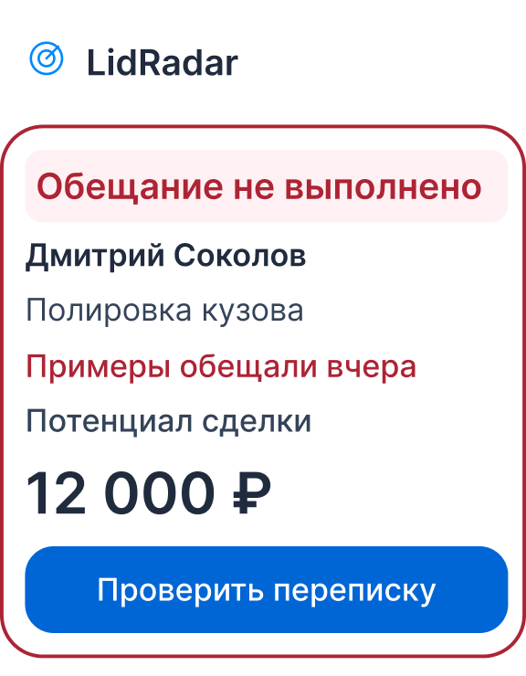

Ответ
Клиент ждёт ответа
Проверьте, кому не ответили за установленный срок. Учитываются рабочие часы точки.
Риск «Нет ответа клиенту» работает без AI.
LIDRADAR ДЛЯ СЕРВИСНОГО БИЗНЕСА
Верните разговор в работу.
LidRadar выделяет разговоры в подключённых чатах Telegram, которым нужно внимание. Сотрудник проверяет сигнал и сам связывается с клиентом. Вы видите записанную работу и подтверждённые оплаты.
Если следующий шаг остаётся в памяти сотрудника, владельцу приходится возвращаться к чатам и уточнять, что сделано.
Ответ
Проверьте, кому не ответили за установленный срок. Учитываются рабочие часы точки.
Риск «Нет ответа клиенту» работает без AI.
Запись
Проверьте разговор, в котором клиент выразил желание записаться, а подтверждения ещё нет.
AI извлекает факты из текста. Сигнал проверяет сотрудник.
Обещание
Вернитесь к договорённости: выполнить обещанное или сообщить новый срок должен сотрудник.
Возможны ошибки, пропуски и задержки AI — проверяйте переписку.
01
Укажите услуги, точки и графики работы. Подключите выбранные чаты обычного Telegram-аккаунта через своего бота. Business и Premium не обязательны.
02
Откройте ситуацию с контекстом переписки, услугой и этапом сделки. Важность и фильтры помогают выбрать, с чего начать. Рекомендация зависит от типа риска; действие выбирает сотрудник.
03
По активному риску сотрудник, например, звонит клиенту, затем записывает выполненный звонок и реакцию клиента. Полученную оплату подтверждают отдельно.
Письменный ответ бизнеса в Telegram может сам закрыть риск «Нет ответа клиенту». После закрытия новые действия и исходы по нему недоступны. Реальный ответ не нужно задерживать ради записей.
Личные уведомления подключаются отдельно от источника переписки. Каждый участник выбирает свои настройки; отключение уведомлений не выключает Radar.
Начните с активных рисков, посмотрите записанную работу и подтверждённые оплаты. По выбранной ситуации можно обсудить с командой конкретный следующий шаг.
Нескольким точкам — свои графики. Ожидание ответа учитывает рабочее время точки; фильтр помогает разбирать обращения выбранного места работы.
В карточке собраны сведения о риске, переписке и сделке. Можно отметить, что риск взят в работу, записать выполненное действие и реакцию клиента.
Ответы клиентам сотрудник продолжает отправлять в Telegram.
Если вам приходится искать незавершённые разговоры и спрашивать команду, что сделано, на демонстрации оцените список рисков и записи по ним. Сотрудникам нужно отмечать действия, реакцию клиента и оплаты. Интеграция с вашей CRM в демонстрацию не входит.
Учёт результата
Сотрудник записывает выполненную работу и исход разговора.
Если деньги действительно получены, человек отдельно подтверждает сумму и её связь с работой над риском.
Исход «Оплатил» сам по себе не подтверждает деньги.
Связь в учёте не доказывает, что продажа произошла благодаря LidRadar.
Владелец различает подтверждённые оплаты со связью с риском и оплаты без такой связи. Потенциальная сумма берётся из точной цены услуги. Неизвестная цена или диапазон остаются неопределённой суммой. Приём платежей и банковская сверка в этот сценарий не входят.
Кому стоит посмотреть демонстрацию
Детейлинг, салон, мастерская — примеры такого рабочего процесса.
Если вы ищете автоматические ответы клиентам, платёжный сервис или полную замену CRM, задачи этого демонстрационного сценария отличаются. Если переписки в Telegram нет, сначала стоит обсудить уместность LidRadar.
Учебный пример
Проверьте по переписке, почему появился сигнал.


Учебные ситуации объясняют работу, а не результаты клиента.
На демонстрации важны конкретные вещи: почему появился риск, какая переписка за ним стоит, что решает сотрудник и где фиксируется результат.
AI извлекает факты о цене, записи и обещании. Он может ошибаться, пропускать ситуации и задерживаться. Рекомендация зависит от типа риска; решение принимает человек.
Владелец управляет компанией и видит аналитику; менеджер работает с рисками и диалогами. Для включения переписок в обучающие наборы предусмотрено отдельное согласие владельца. Его отзыв прекращает будущие включения и не выключает Radar.
До решения о покупке
Обсудим, как у вас устроено общение с клиентами. На учебном примере предлагаем показать:
Для заявки не нужны токены ботов, клиентские переписки и доступ к аккаунтам.
На демонстрации вы оцените, подходит ли такой порядок работы вашей команде и какие действия сотрудникам нужно отмечать в LidRadar.
Расскажите о компании и оставьте контакт. Свяжемся, чтобы обсудить вашу задачу и согласовать демонстрацию.
Все поля обязательны, кроме количества точек.
Спасибо! Свяжемся с вами по указанному контакту, чтобы обсудить задачу и согласовать демонстрацию.
Коммерческие условия и доступность подключения обсудим отдельно. Заявка не оформляет подписку или покупку.
Достаточно обычного Telegram-аккаунта. Подключаются выбранные чаты через своего бота; Business и Premium не обязательны. Условия конкретного подключения обсудим отдельно.
Ваш сотрудник в Telegram или другом выбранном вами способе связи. LidRadar помогает разобрать риск и записать работу; сообщения клиентам от вашего имени он не отправляет.
Ответы остаются в Telegram. Для работы с рисками сотрудник также использует LidRadar: отмечает выполненные действия, реакцию клиента и отдельно подтверждает оплату. Эти записи нужны для обзора владельца.
На демонстрации оцените отдельную задачу: как замечать незавершённые разговоры в Telegram и видеть работу по ним. Интеграция с вашей CRM и перенос базы этим предложением не обещаются.
Учитываются услуги из каталога, рабочий график и факты из переписки. Для части ситуаций факты извлекает AI, который может ошибаться и пропускать их. Риск «Нет ответа клиенту» работает без AI. Сотрудник проверяет сигнал по разговору.
Такой тип риска предусмотрен, как и пауза после намерения подумать или незавершённая договорённость. Это повод проверить разговор и решить, уместно ли связаться снова. Решение принимает человек.
Риск «Нет ответа клиенту» закрывается после ответа бизнеса. У других типов свои условия; например, приветствие само по себе не выполняет обещание прислать расчёт. Ложный сигнал можно оценить отдельно.
Потенциальную сумму, когда известна точная цена услуги, и отдельно подтверждённые человеком оплаты. Связь оплаты с действием и исходом по риску отражает учёт; она не доказывает дополнительную продажу благодаря сервису.
Этот сценарий описывает анализ текста. Для просмотра вложений может потребоваться Telegram; анализ их содержимого в данном предложении не заявляется.
AI работает с текстом переписки, а в нём могут быть контакты и суммы. Для включения переписок в обучающие наборы требуется отдельное согласие владельца. Отзыв прекращает будущие включения, но сам по себе не означает удаление уже созданных наборов. С условиями обработки можно ознакомиться в документах сервиса.
Доступ зависит от роли. Владелец видит аналитику, менеджер работает с рисками и может подтверждать оплаты. Полный журнал всех прошлых исходов, повторный просмотр заметок и журнал оплат для менеджера в показанный сценарий не входят.
Коммерческие условия и доступность подключения обсудим отдельно. Заявка нужна для демонстрации и обсуждения пользы; она не оформляет подписку или покупку.
На учебном примере обсудим, как разбирать зависшие обращения в Telegram и видеть работу по ним, прежде чем решать вопрос о покупке.
Обсудить демонстрацию